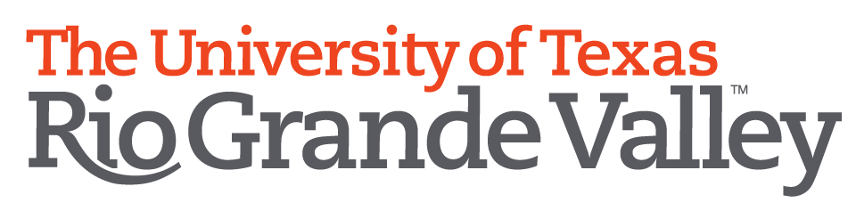

可积系统国际研讨会
2022年8月9日至10日
西安电子科技大学
西安电子科技大学
| 主页 | 会议注册 | 会议日程 | 会议组织 | English |
通过数学模型研究物理现象通常引起一类称为可积系统的非线性偏微分方程。经过两年多的疫情阻隔， 本次可积系统国际研讨会（线上）邀请了本领域的知名专家介绍最新研究发展和趋势， 为研究者们提供一个分享交流的平台， 同时也为青年教师及硕博研究生提供进一步学习可积系统的机会。
请注意本次会议为线上（Zoom）召开，预计时间为2022年8月9日至10日，请注册后获取详细会议号和时间。
 我们使用第三方平台（问卷星）进行注册，所收集的信息仅为会议所用。
我们使用第三方平台（问卷星）进行注册，所收集的信息仅为会议所用。
请扫描右侧二维码进行注册，如果无效，请在浏览器直接打开链接进行注册。
| 8月9日 | 08:00-8:15 上午 | 开幕式院长致辞：马如云 教授 学院简介：吴事良 教授 |
| 08:20-09:15 | Mark Ablowitz | |
| 09:15-10:10 | 张友金 | |
| 10:10-11:05 | 周汝光 | |
| 11:05-12:00 | 胡星标 | |
| 12:00-02:00 下午 | （休息） | |
| 02:00-02:55 | 范恩贵 | |
| 02:55-03:50 | Jonatan Lenells | |
| 03:50-04:45 | Yuji Kodama | |
| 04:45-05:40 | 闫振亚 | |
| 8月10日 | 08:20-09:15 上午 | Dmitry Pelinovsky |
| 09:15-10:10 | 贺劲松 | |
| 10:10-11:05 | 张大军 | |
| 11:05-12:00 | 朱佐农 | |
| 12:00-02:00 下午 | （休息） | |
| 02:00-02:55 | 楼森岳 | |
| 02:55-03:50 | 刘青平 | |
| 03:50-04:45 | Tarmar Grava | |
| 04:45-05:40 | Matteo Casati |
组织委员会：马如云 (主席，西安电子科技大学)，冯宝峰 (联合主席，UTRGV)，吴事良 (西安电子科技大学)，张玉娟 (西安电子科技大学)。
|
|
 |